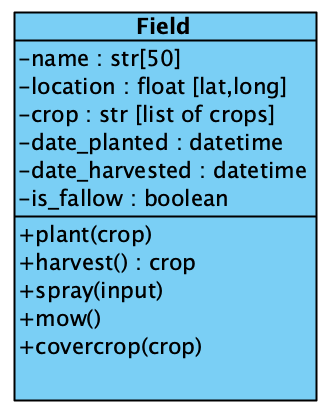

Introduction to Ag Informatics
Module 3, Lecture 3Ankita Raturi, ankita@purdue.edu
Outline for Today
- Designing a web app.
Warmup: Representing Crops
Let's extend the lab project to represent crops in my farm.
How might we...
- Represent a plant?
- Which Attributes?
- Where does the data come from?
- What about varieties?
- Seed vs seedling vs crop vs product?
- Limits to object oriented modeling?
Activity
Designing a Management Information System
Farm mgmt. Forest mgmt. Water mgmt. Inventory mgmt.
Groups of 3.
Activity: Management Information System
Part 1: Specifying Functionality
- Who are your users?
- What do the users need to do?
- What data will they collect or use?
Goal: Specify your overarching goal and functionality to have a Minimum Viable product (MVP).
Activity: Management Information System
Part 2: Modeling the System
How would you decompose a farm into logical objects?
Object. Attribute:type[limits]. Function (input):(output).
Goal: Low coupling (relationships between models), high cohesion (relationships within a model).
Activity:Management Information System
Part 3: Determining your User Interface
What are the main pages of the app?
Consider:
- Page layout: templates possible?
- Data: internal model vs external location?
Goal: Logical sequencing of activities. Grouping similar tasks together.
Farm Management Systems
Micro-presentation
We'll go around the room and see what everyone's designed.
Questions?
License
- Attribution Recommendation: Introduction to Agricultural Informatics Course", Ankita Raturi, Purdue University, 2021. Available at https://github.com/ag-informatics/ag-informatics-course. Licensed by CC BY-NC-SA 4.0.

This course is licensed under a Creative Commons Attribution-NonCommercial-ShareAlike 4.0 International (CC BY-NC-SA 4.0) license. This is a human-readable summary of (and not a substitute for) the license. Official translations of this license are available in other languages.
You are free to:
- Share — copy and redistribute the material in any medium or format
- Adapt — remix, transform, and build upon the material
Under the following terms:
- Attribution — You must give appropriate credit, provide a link to the license, and indicate if changes were made. You may do so in any reasonable manner, but not in any way that suggests the licensor endorses you or your use.
- NonCommercial — You may not use the material for commercial purposes.
- ShareAlike — If you remix, transform, or build upon the material, you must distribute your contributions under the same license as the original.
- No additional restrictions — You may not apply legal terms or technological measures that legally restrict others from doing anything the license permits.